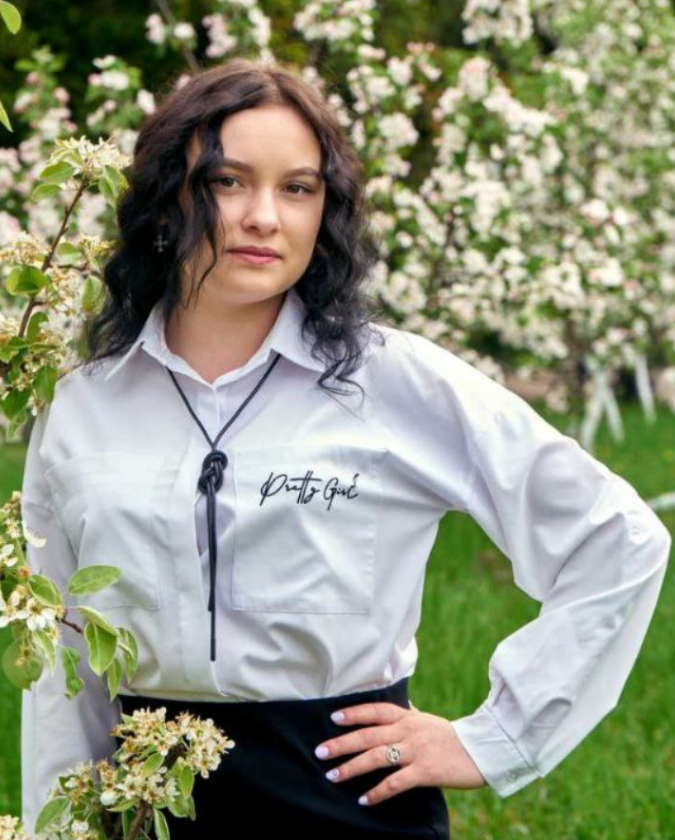
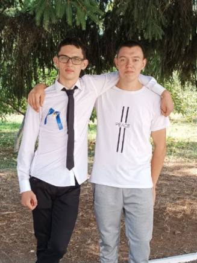
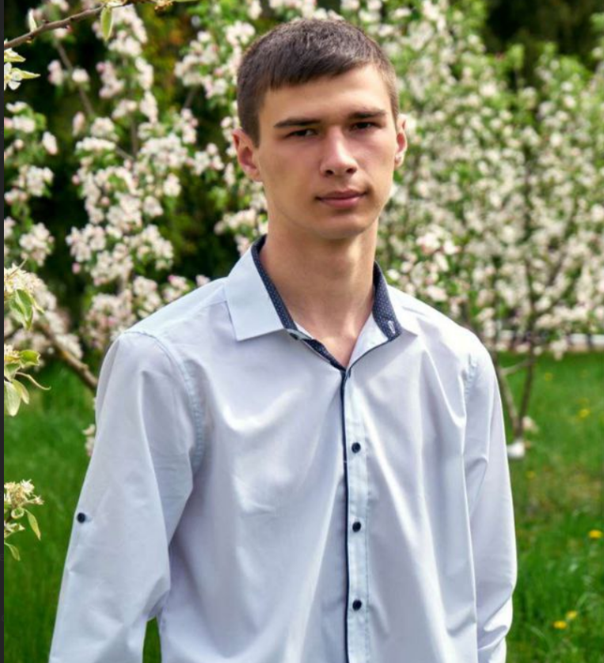

Мої друзі та одногрупники
Люди, які роблять моє життя яскравішим та надихають на звершення
🗺️ Навігаційна карта друзів
Наведіть курсор на фігури для перегляду інформації та клікайте для переходу

Як користуватися картою:
• Ліве коло - Вікторія (найкраща подруга)
• Центральний прямокутник - Олексій (одногрупник)
• Правий трикутник - Святослав (друг дитинства)
• Праве коло - Антон (спортивний друг)
💫 Інформація про моїх друзів
Кожен з них - унікальна особистість з яскравою індивідуальністю

Вікторія
🎓 Найкраща подруга
Знайомі з початкових класів, разом ходили в один клас.
Завжди була гарним співрозмовником з якою було про що поговорити і чудовим почуттям гумору.
Надійний друг, який завжди підтримає в скрутну хвилину.
Навчання: Дизайнер
Хобі: Фотографія, малювання
Якість: Відповідальність та творчість
Хобі: Фотографія, малювання
Якість: Відповідальність та творчість

Олексій
Одногрупник
Разом вчимося в університеті з першого курсу.
Експерт у складних технічних питаннях, завжди готовий допомогти з лабораторними роботами.
Відмінно розбирається в програмуванні та математиці.
Навчання:Комп'ютерні науки
Хобі: Шахмати, програмування
Якість: Логічне мислення і гострий розум
Хобі: Шахмати, програмування
Якість: Логічне мислення і гострий розум

Святослав
Друг дитинства
Дружимо з дитячого садка! Пройшли разом школу, а тепер і університет.
Надзвичайно здібний хлопець з чудовим почуттям гумору і гострим розумом.
Завжди знає, як підняти настрій.
Навчання: Банківська справа
Хобі: Футбол, подорожі, книги
Якість: Креативність та комунікабельність
Хобі: Футбол, подорожі, книги
Якість: Креативність та комунікабельність

Антон
Спортивний друг
Знайомі з молодшої школи, разом грали у футбол.
Завжди мотивував вести здоровий спосіб життя та не здаватися.
Справжній лідер і відповідальний товариш.
Навчання: Футболіст
Хобі: Спорт, тренування, активний відпочинок
Якість: Дисципліна та цілеспрямованість
Хобі: Спорт, тренування, активний відпочинок
Якість: Дисципліна та цілеспрямованість